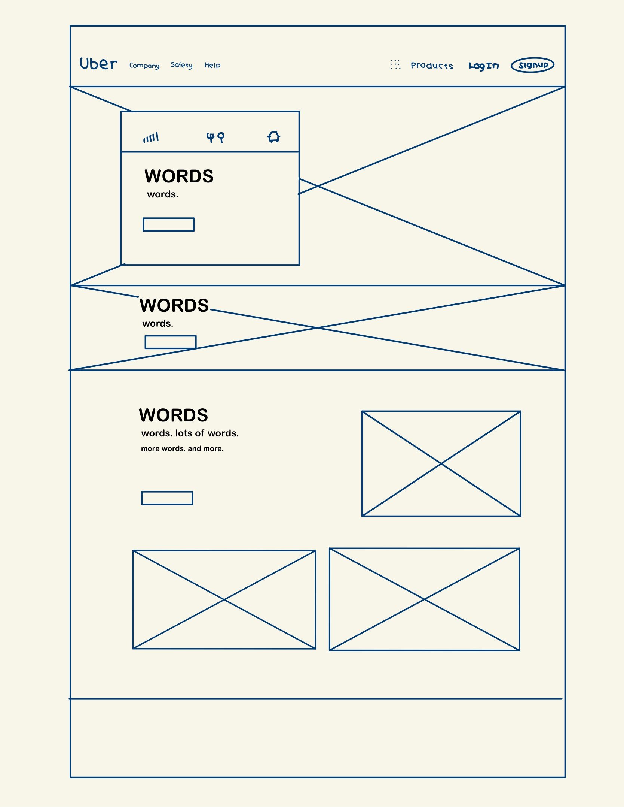
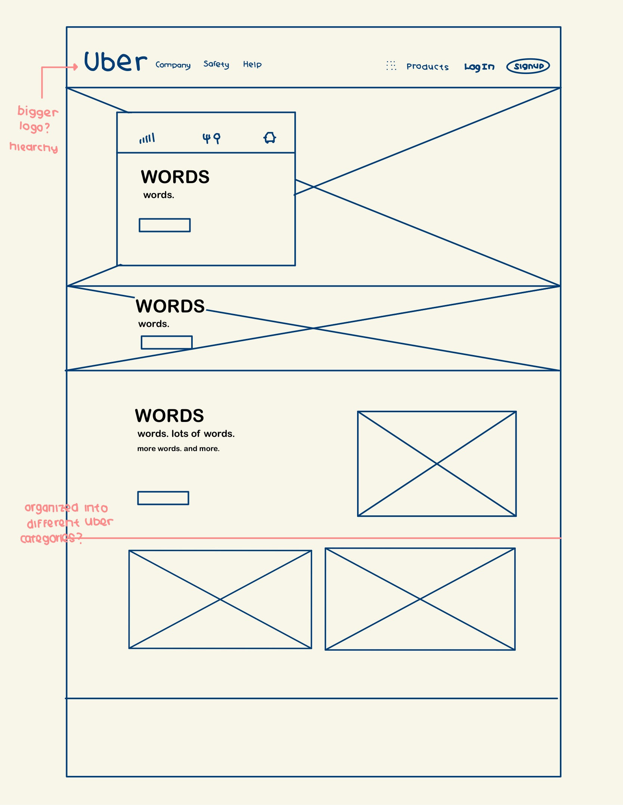

What is the goal of the website? Who is it intended for? How does the design accomplish this? Write 2-3 sentences answering these questions. (Use the 'p' tag again!)
The goal of the website is to advertise Uber and its services. The website is intended to be designed for those who are seeking the different servcies that Uber is offering. The design of the website is categorized into different sections that promotes Uber's safety and locations; it also promotes UberEats and etc.
Write 2-3 sentences about what problems your redesign addressed, and how it solved them.
I believe that the website did not highlight its logo due to its small size. In the redesign, the logo was made bigger.